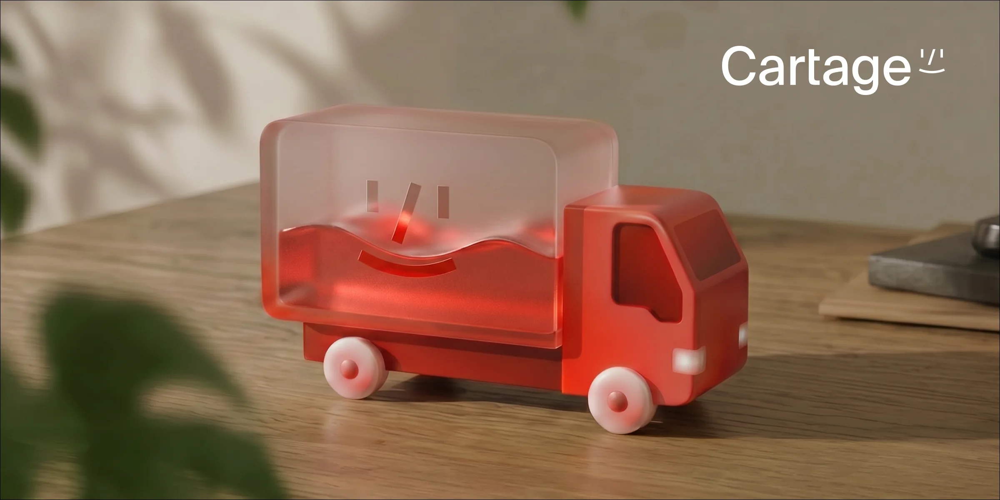
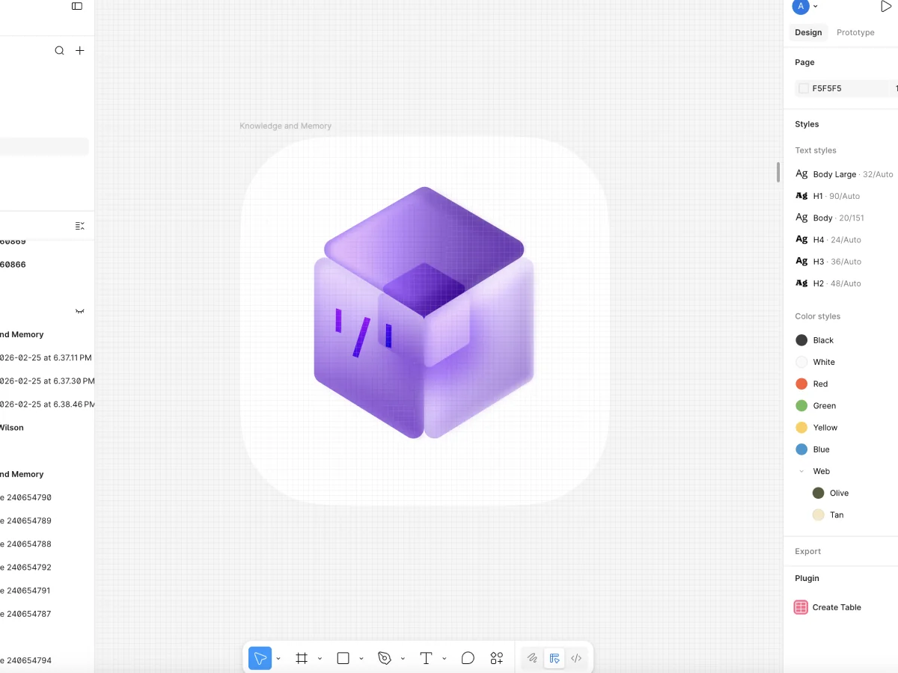
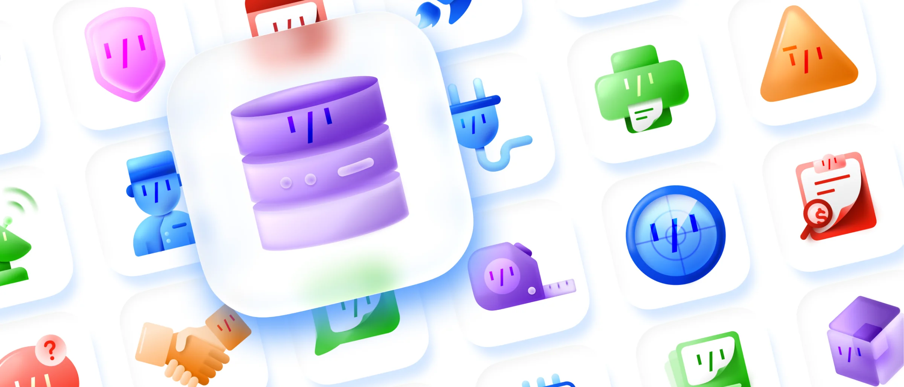
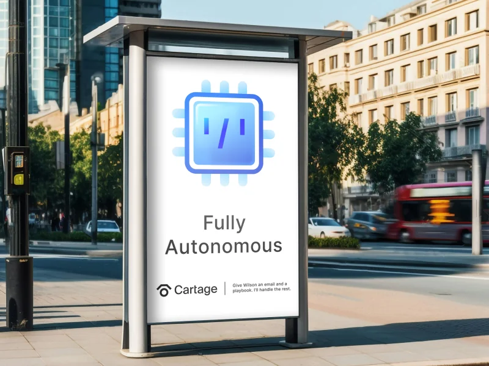
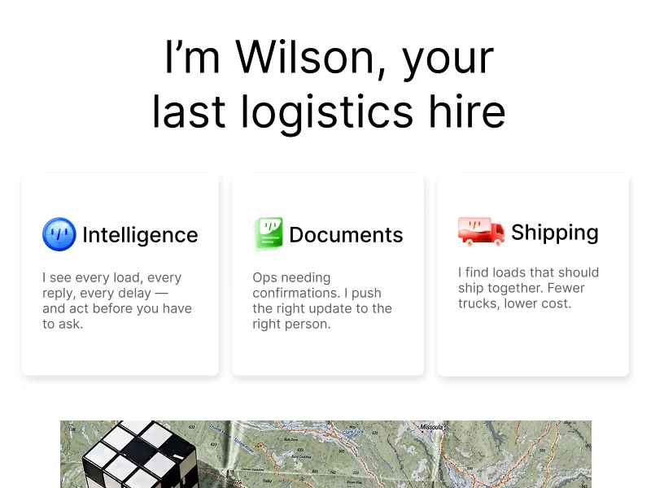

Cartage
A 3D icon system for an AI-native logistics platform, built to make the product explain itself.
- Client
- Cartage, an AI-native logistics platform that works as an autonomous operating system for freight coordination
- Role
- Brand Designer
- Years
- 2025 to 2026
- Scope
- A system of icons used throughout the platform UI, visual system

The problem
The goal was to design a system of icons that makes Cartage's operating system more intuitive while elevating the brand's visual identity to match their product's quality.
Tech is a notoriously opaque industry. For all the talk about algorithms, data, and AI, it can still be a challenge for customers to understand how it all fits together to meet their business needs. This is great for creating mystique and allure, but at the same time, I think it makes it difficult for tech brands to connect their products with users. They still need to be intuitive enough for people to log in to an application and understand what they're looking at and how to interact with it, on day one.
Being an AI native platform, Cartage is at the bleeding edge of modern technology. Part of their struggle is in making the connection between their clients' workflow and the capabilities of their AI. Cartage brought me on to build out a visual language for their operating system. Creating icons to break down the barrier between their advanced system and the average shipping and logistics client. All while leveling up the look of the brand to match the quality of their product.

The thinking
Skeuomorphism once made the digital world feel familiar. I wanted that level of detail, made modern.
I looked back at the ways that tech has explained itself in the past. Apple's use of skeuomorphism was pivotal in making the digital landscape accessible for people to adopt into their daily lives. The minimal, flat design aesthetic that has been popular in design lately isn't effective in communicating dense subjects. I wanted there to be detail in my designs, the way skeuomorphism is, but I wanted to put a modern twist on it. Just making icons look like real-world objects, in the way Apple did in the early 2000's, was not going to demonstrate the modern ingenuity of the company.

The system
Soft, glossy textures and monochromatic color palettes give an ethereal quality, while the objects themselves mimic real-world counterparts that people are familiar with.
I achieved that modern look by finding a balance between flat illustration and photo realism. The objects are simplified slightly to increase legibility and help with scaling issues, but subtle textures, transparencies, and lighting create dimensionality. This allows the objects to feel tangible but not something you might find in the physical world. The Monochromatic yet detailed coloring also plays into this same effect.
Integrating their AI agent, Wilson's, face into the icons also ties in the fact that all of these tools are part of their AI system. It lets the customer know that Wilson is connected to every part of the process.
In the world
This project sets them up to expand on their identity and create a UI that is unique and innovative.
What started as a simple "make us some icons" project turned into a world-building exercise. Instead of treating each icon as a one-off asset, I looked at how they all worked together and what they said about Cartage as a company. That shift helped the brand see the bigger picture of how to present itself to the world. The icons became a visual language that connects their AI, their tools, and the everyday work of their customers. Wilson went from being a feature to being a visible presence across the entire platform.


Results
- Decrease in customers calling for walkthroughs and tutorials
- 60%
- Unified visual language across the entire platform UI
- 1
The impact showed up quickly. Customers understood the platform faster, and calls for walkthroughs and tutorials dropped by 60%. That told me the icons were doing exactly what they were meant to do. Which is to make an advanced system feel approachable on day one. Beyond the numbers, the project gave Cartage a new perspective on how to think about their brand as a whole. They now have a foundation they can keep building on as they grow into a UI that is as unique and innovative as the technology behind it.